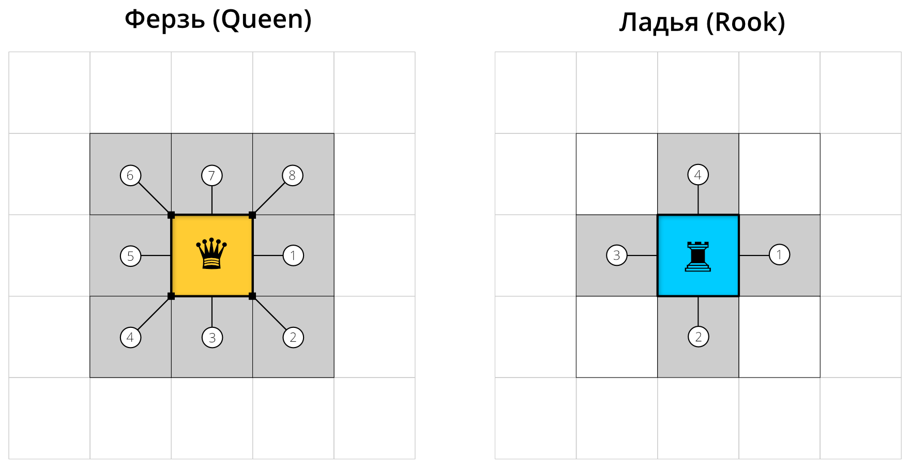
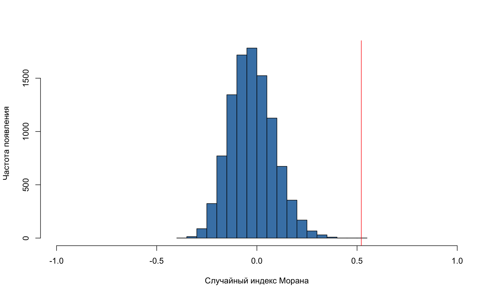
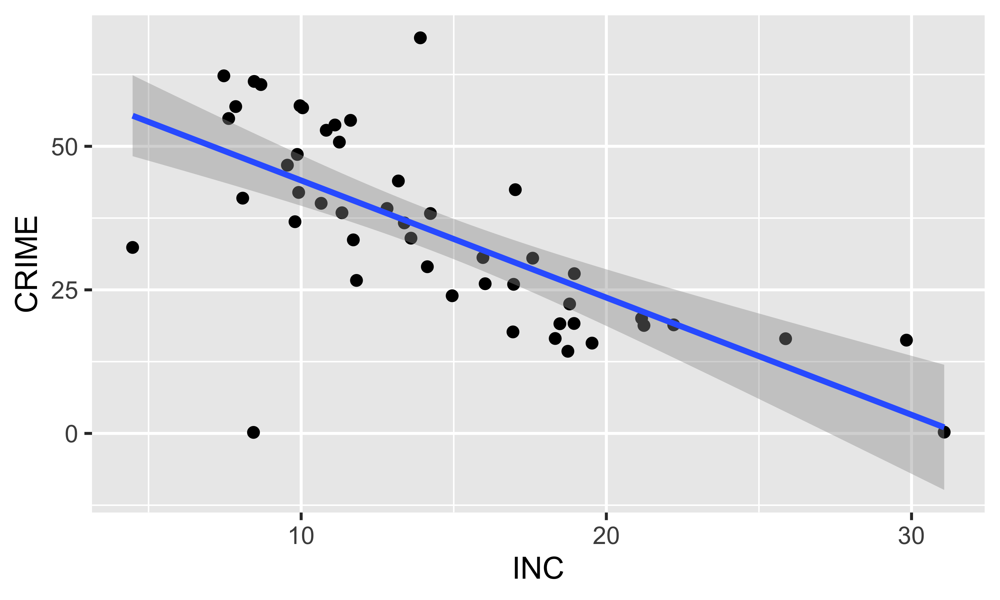
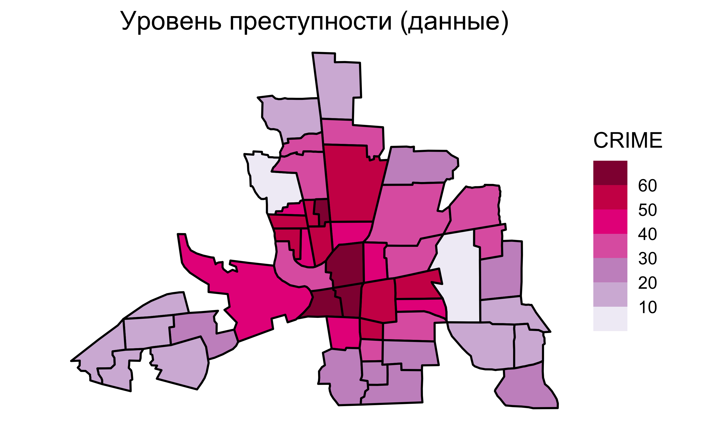
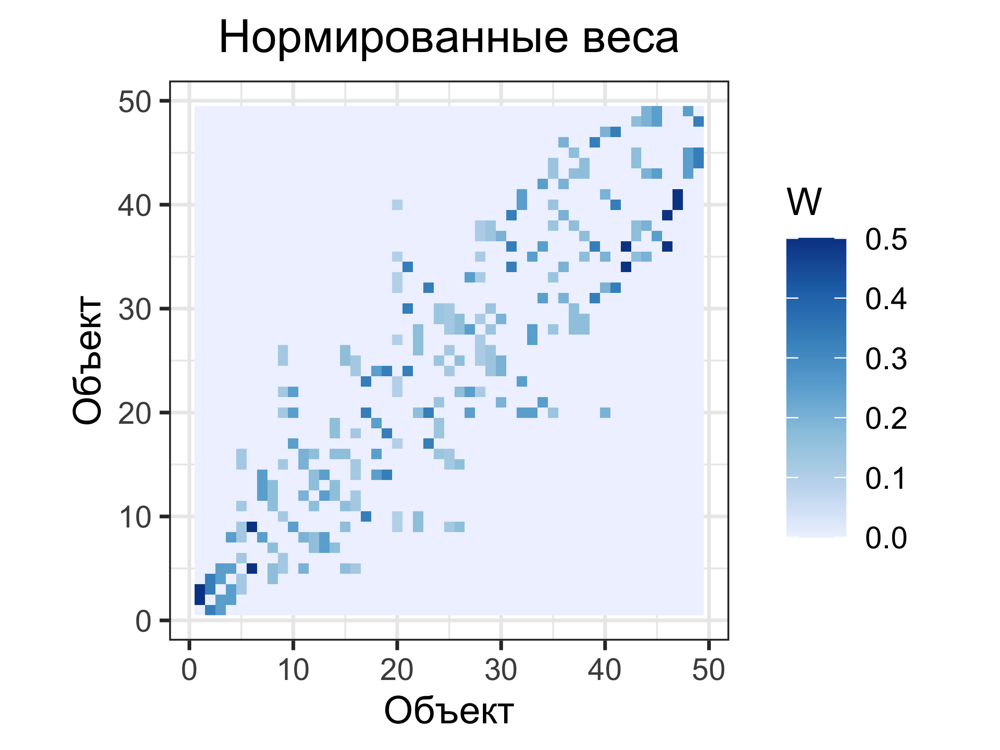
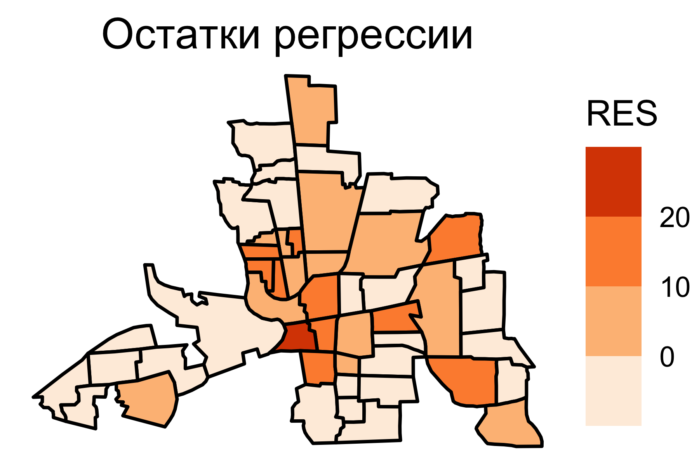
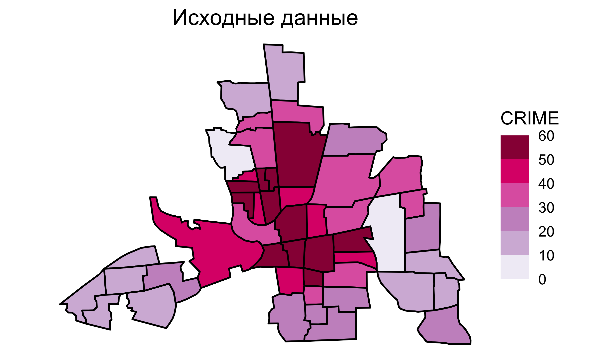
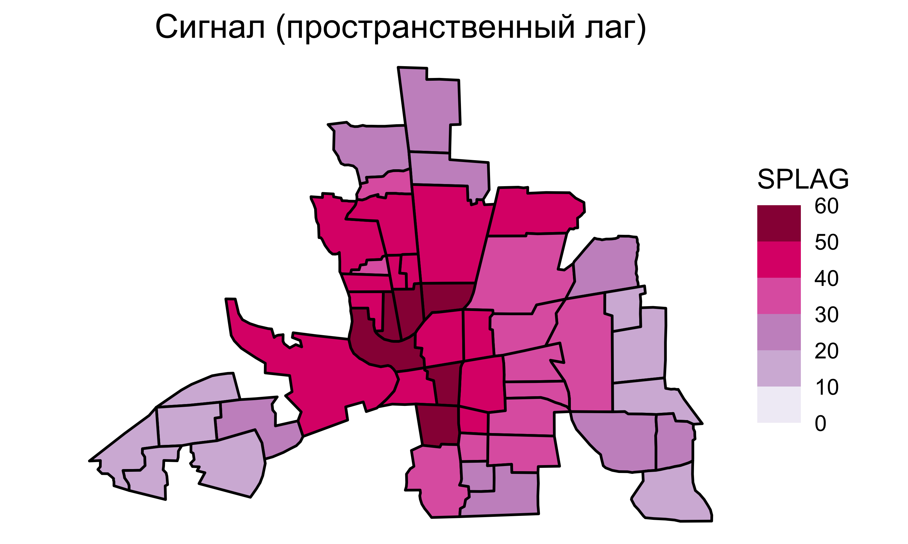

Пространственная регрессия
Пространственная статистика
Самсонов Тимофей Евгеньевич
2 апреля 2024 г.
Особенности случайных процессов в пространстве
Пространственная зависимость (spatial dependence) — наличие автокорреляции наблюдений.
- Выражается в зависимости остатков линейной регрессии. Устраняется посредством пространственной регрессии (spatial regression).
Пространственная гетерогенность (spatial heterogeneity) — нестационарность процессов, порождающих наблюдаемую переменную.
- Выражается в неэффективности постоянных коэффициентов линейной регрессии. Устраняется постредством географически взвешенной регрессии (geographically weighted regression).
Линейная регрессия
Пусть дан вектор \(\mathbf{y} = \{y_1, y_2, ... y_n\}\) измерений зависимой переменной, а также матрица \(\mathbf{X} = \{x_{ij}\}\) размером \(n \times m\), состоящая из значений \(m\) независимых переменных для \(n\) измерений. В этом случае модель линейной регрессии может быть записана как
\[\mathbf{y} = \mathbf{X} \boldsymbol\beta + \boldsymbol\epsilon,\]
где:
\(\boldsymbol\beta\) — вектор коэффициентов регрессии;
\(\boldsymbol\epsilon\) — вектор случайных ошибок, независимо распределенных относительно среднего значения в нуле.
Пример
Процент домохозяйств, находящихся во владении

Пример
Уровень безработицы
Пример
Обычная линейная регрессия
Пример
Остатки регрессии
Пространственная регрессия
Для того чтобы учесть пространственную автокорреляцию остатков, в модель линейной регрессии добавляется компонента пространственной авторегрессии (spatial autoregression), которая моделирует пространстенный лаг:
\[\mathbf{y} = \underbrace{\mathbf{X} \mathbf{\beta}}_{тренд} + \underbrace{\color{red}{\rho\mathbf{Wy}}}_{сигнал} + \underbrace{\mathbf{\epsilon}}_{шум},\]
\(\rho\) — коэффициент регрессии, отражающий степень пространственной автокорреляции
\(\mathbf{W}\) — матрица пространственных весов
Полученная модель называется моделью пространственной регрессии (spatial regression).
Компоненты модели (тренд, сигнал и шум) называются предикторами.
Пространственная регрессия
Для получения коэффициентов \(\boldsymbol\beta\) и \(\rho\) выполним ряд преобразований:
\[\mathbf{y} = \mathbf{X} \mathbf{\beta} + \rho\mathbf{Wy} + \mathbf{\epsilon}\\ \mathbf{y} - \rho\mathbf{Wy} = \mathbf{X} \mathbf{\beta} + \mathbf{\epsilon}\\ (\mathbf{I} - \rho\mathbf{W})\mathbf{y} = \mathbf{X} \mathbf{\beta} + \mathbf{\epsilon}\]
Предполагая, что матрица \((\mathbf{I} - \rho\mathbf{W})\) инвертируема, получаем систему уравнений пространственной регрессии:
\[\color{red}{\boxed{\color{blue}{\mathbf{y} = (\mathbf{I} - \rho\mathbf{W})^{-1}\mathbf{X}\mathbf{\beta} + (\mathbf{I} - \rho\mathbf{W})^{-1}\mathbf{\epsilon}}}}\]
Данная модель идентична обычной регрессии \(\mathbf{y} = \mathbf{X} \mathbf{\beta} + \mathbf{\epsilon}\), но в ней независимые переменные и ошибки линейно трансформированы умножением на \((\mathbf{I} - \rho\mathbf{W})^{-1}\).
Пространственная регрессия
\[\mathbf{y} = \mathbf{X} \mathbf{\beta} + \rho\mathbf{Wy} + \mathbf{\epsilon}\]
Для нахождения коэффициентов \(\boldsymbol\beta\) и \(\rho\) используется минимизация квадрата случайной компоненты, которую можно представить как \(\mathbf{\epsilon} = \mathbf{y} - \mathbf{X} \mathbf{\beta} - \rho\mathbf{Wy}\):
\[\sum_i \Bigg(y_i - \sum_j \beta_j x_{ij} - \rho \sum_j w_{ij} y_j \Bigg)^2\]
Задача решается в 2 этапа:
- находится оптимальное значение \(\rho\);
- находится оптимальное значение \(\boldsymbol\beta\) путем подстановки в вышеуказанное выражение.
Пространственная фильтрация
Модель пространственной регрессии может быть использована для осуществления пространственной фильтрации — убирания автокорреляционной составляющей.
Для этого необходимо авторегрессионную компоненту (пространственный лаг) перенести в левую часть уравнения:
\[\mathbf{y} = \mathbf{X} \mathbf{\beta} + \rho\mathbf{Wy} + \mathbf{\epsilon}\\ \mathbf{y}^* = \mathbf{y} - \rho\mathbf{Wy} = \mathbf{X} \mathbf{\beta} + \mathbf{\epsilon}\]
Пространственная фильтрация бывает полезна, когда наблюдается несоответствие масштаба наблюдений и масштаба процесса.
Например, статистика по показателю, контролируемому на региональном уровне, собирается по муниципалитетам. В этом случае фильтрация позволяет подобрать параметры \(\mathbf{\beta}\), учитывающие наличие высокой пространственной автокорреляци.
Оценка географического соседства
Примеры иллюстрируются по данным Кировской области:
Оценка географического соседства
В целом, можно выделить три большие группы методов:
Соседи по смежности
Соседи по графу
Соседи по метрике
Соседство по смежности
Соседство по смежности основано на топологических отношениях между объектами и применяется при анализе данных, приуроченных к площадным единицам.
Соседство по смежности
Соседство по графу
Соседство по графу основано на отношениях объектов в триангуляции Делоне.
В эту же категорию попадают всевозможные фильтрации триангуляции Делоне, которые удаляют из нее ребра, не удовлетворяющие заданным критериям:
сфера влияния
граф Гэбриела
относительное соседство
Соседство по триангуляции Делоне
Соседство по триангуляции реализуется путем триангулирования центров территориальных единиц.
Внешние ребра идут по выпуклой оболочке множества центров
Очень много связей между единицами, которые реально соседними не являются

Сфера влияния
Ребра триангуляции, инцидентные (примыкающие к) данной вершине, сохраняются только если \(D \leq 2D_{min}\)
Соседство по сфере влияния
Граф Гэбриела
В каждом треугольнике ребро сохранятся только тогда, когда построенная на нем окружность не включает третью точку треугольника
Соседство по графу Гэбриела
Граф относительного соседства
Получается путем фильтрации триангуляции Делоне по следующему правилу:
ребро \(A\), соединяющее две вершины \(p\) и \(q\), будет удалено, если найдется третья вершина \(r\), такая что расстояния от нее до \(p\) и \(q\) ( \(B\) и \(C\) соответственно) окажутся короче, чем \(A\), то есть: \(A > B\) and \(A > C\).
Соседи по метрике
Поиск соседей по метрике — наиболее простой способ определения соседства.
Для его использования необходимо задать метрику (как правило, расстояние между точками), а также критерий фильтрации связей:
по количеству ( \(k\) ближайших)
по расстоянию (не ближе чем \(d_1\), но и не далее чем \(d_2\)).
Соседи по количеству
Соседи по расстоянию
Пространственные веса
Пространственные веса характеризуют силу связи между единицами.
Если единицы не являются соседними (по выбранному правилу), то пространственный вес их связи будет равен нулю. Во всех остальных случаях веса будут ненулевыми.
Поскольку теоретически каждая единица может быть связана с любой другой единицей, распространена форма представления весов в виде матрицы \(W\) размером \(N \times N\), где \(N\) – число единиц.
На пересечении \(i\)-й строки и \(j\)-го столбца матрицы располагается вес связи между \(i\)-й и \(j\)-й единицей.
Бинарная матрица
Если связь есть, то ее вес равен единице (1), если нет — нулю (0)
Нормированная матрица
Вес \(j\)-й единицы по отношению к \(i\)-й равен \(1/n_i\), где \(n_i\) — количество соседей у \(i\).
Пространственная автокорреляция
Индекс Морана (Moran’s I)
Анализ пространственной автокорреляции осуществляется, как правило, путем вычисления индекса Морана (Moran’s I):
\[I = \frac{n \sum^n_{i=1} \sum^n_{j=i} w_{ij} (y_i - \bar y)(y_j - \bar y)}{ \Big[\sum^n_{i=1} \sum^n_{j=i} w_{ij}\Big] \Big[\sum^n_{i=1} (y_i - \bar y)^2\Big]}\]
где:
- \(n\) — количество единиц,
- \(w_{ij}\) — вес пространственной связи между \(i\)-й и \(j\)-й единицей,
- \(y_i\) — значение в \(i\)-й единице,
- \(\bar y\) — выборочное среднее по всем единицам
Коэффициент корреляции Пирсона
Обратим внимание на то, что индекс Морана по сути и форме записи похож на линейный коэффициент корреляции Пирсона, в котором перебираются все пары соответствующих друг другу значений из рядов \(X = \{x_i\}\) и \(Y = \{y_i\}\):
\[r_{xy} = \frac{\sum_{i=1}^{n}(x_i - \bar x)(y_i - \bar y)}{\sqrt{\sum_{i=1}^{n}(x_i - \bar x)^2} \sqrt{\sum_{i=1}^{n}(y_i - \bar y)^2}}\]
Индекс Морана (Moran’s I)
Индекс Морана для нормально распределенных данных лежит в диапазоне от -1 до 1:
+1 означает детерминированную прямую зависимость — группировку схожих (низких или высоких) значений.
0 означает абсолютно случайное распределение (CSR — complete spatial randomness)
-1 означает детерминированную обратную зависимость — идеальное перемешивание низких и высоких значений, напоминающее шахматную доску
Математическое ожидание индекса Морана для случайных данных равно \(E[I] = -1/(n-1)\)
Индекс Морана (Moran’s I)
Индекс Морана для данных за февраль:
# Выбираем данные за февраль
feb = mun |>
filter(month == 'Февраль')
# Вычисление индекса (тест) Морана
moran.test(feb$nsick, W)
##
## Moran I test under randomisation
##
## data: feb$nsick
## weights: W
##
## Moran I statistic standard deviate = 5.0335, p-value = 0.0000002408
## alternative hypothesis: greater
## sample estimates:
## Moran I statistic Expectation Variance
## 0.52118132 -0.02564103 0.01180194Перестановочный тест Морана
Значения перемешиваются между территориальными единицами и далее строится гистограмма распределения. Значимость индека Морана оценивается по отклонению реального значения от среднего по случайным симуляциям
Перестановочный тест Морана
Значения перемешиваются между территориальными единицами и далее строится гистограмма распределения. Значимость индека Морана оценивается по отклонению
##
## Monte-Carlo simulation of Moran I
##
## data: feb$nsick
## weights: W
## number of simulations + 1: 10001
##
## statistic = 0.52118, observed rank = 10001, p-value = 0.00009999
## alternative hypothesis: greaterДиаграмма рассеяния Морана
По оси \(X\) откладывается значение в каждой территориальной единице, в по оси \(Y\) — ее пространственный лаг (средневзвешенное значение по всем ее соседям).
Тангенс угла наклона прямой равен значению индекса Морана.
Выделенные фонариком единицы вносят наибольший вклад в индекс
Пространственная авторегрессия
Поиск уравнения пространственной регрессии и его авторегрессионной составляющей может быть выполнен посредством функций spautolm() и lagsarlm() из пакета spatialreg:
Пространственная авторегрессия
На основе полученной модели можно построить карты пространственной авторегрессии и остатков:

Предсказание на основе простр. регрессии
Различают три вида предсказания:
Внутривыборочное (in-sample) используется для вычисления предикторов на основе данных, использованных для построения модели пространственной регрессии.
Прогнозное (prevision/forecast) используется для вычисления предикторов на основе новых данных по тем же выборочным единицам
Вневыборочное (out-of-sample) используется для вычисления предикторов с включением новых выборочных единиц
Внутривыборочное предсказание
Внутривыброчное (in-sample) предсказание не требует дополнительных действий, поскольку оно осуществляется непосредственно моделью пространственной регрессии:
\[\underbrace{\mathbf{y}}_{отклик} = \underbrace{\mathbf{X} \mathbf{\beta}}_{тренд} + \underbrace{\rho\mathbf{Wy}}_{сигнал} + \underbrace{\mathbf{\epsilon}}_{шум}\]
Прогнозное предсказание
Прогонозное (forecast) предсказание требует последовательного вычисления тренда, переменной отклика и сигнала. Для этого необходимо выполнить следующие преобразования:
\[\mathbf{y} = \mathbf{X} \mathbf{\beta} + \rho\mathbf{Wy} + \mathbf{\epsilon}\\ (\mathbf{I} - \rho\mathbf{W})\mathbf{y} = \mathbf{X}\mathbf{\beta} + \mathbf{\epsilon}\\ \mathbf{y} = (\mathbf{I} - \rho\mathbf{W})^{-1}\mathbf{X}\mathbf{\beta} + (\mathbf{I} - \rho\mathbf{W})^{-1}\mathbf{\epsilon}\]
Прогноз с использованием полученного выражения делается в предположении, что \(\mathbf{\epsilon} = 0\). В этом случае, имея новые данные тренда \(\mathbf{X}\mathbf{\beta}\), вычисляем сначала \(\mathbf{y} = (\mathbf{I} - \rho\mathbf{W})^{-1}\mathbf{X}\mathbf{\beta}\) и далее находим сигнал их умножением:
\[\rho\mathbf{Wy} = \rho\mathbf{W} (\mathbf{I} - \rho\mathbf{W})^{-1}\mathbf{X}\mathbf{\beta}\]
Вневыборочное предсказание
Goulard, M., Laurent, T., Thomas-Agnan, C., 2017. About predictions in spatial autoregressive models: optimal and almost optimal strategies. Spatial Economic Analysis 12, 304–325. https://doi.org/10.1080/17421772.2017.1300679
Вневыборочное предсказание
Вневыборочное (out-of-sample) предсказание связано с решением ситуации, когда есть данные по независимым переменным \(\mathbf{X_S}\) и отклику \(\mathbf{Y_S}\) по одним единицам и данные только по независимым переменным \(\mathbf{X_O}\) для другой части единиц. Требуется найти отклик \(\mathbf{Y_O}\) для этих единиц.
Для решения этой задачи необходимо стратифицировать вектора данных и матрицу весов:
\[\begin{bmatrix}\mathbf{Y_S}\\ \color{red}{\mathbf{Y_O}}\end{bmatrix} = \rho \begin{bmatrix}\mathbf{W_{SS}} & \mathbf{W_{SO}} \\ \mathbf{W_{OS}} & \mathbf{W_{OO}}\end{bmatrix} \begin{bmatrix}\mathbf{Y_S}\\\color{red}{\mathbf{Y_O}}\end{bmatrix} + \begin{bmatrix}\mathbf{X_S}\\\mathbf{X_O}\end{bmatrix} \mathbf{\beta} + \begin{bmatrix}\mathbf{\epsilon_S}\\\mathbf{\epsilon_O}\end{bmatrix}\] Красным цветом выделены неизвестные данные.
Вневыборочное предсказание
Для вневыборочного предсказания используется ранее полученная модель прогнозирования \(\mathbf{y} = (\mathbf{I} - \rho\mathbf{W})^{-1}\mathbf{X}\mathbf{\beta}\). Однако ее необходимо также представить в стратифицированном виде:
\[\begin{bmatrix}\mathbf{Y_S}\\ \mathbf{Y_O}\end{bmatrix} = (\mathbf{I} - \rho\mathbf{W})^{-1}\mathbf{X}\mathbf{\beta}=\\=\begin{bmatrix}\mathbf{I_{SS}} - \rho\mathbf{W_{SS}} & -\rho\mathbf{W_{SO}} \\ -\rho\mathbf{W_{OS}} & \mathbf{I_{OO}} - \rho\mathbf{W_{OO}}\end{bmatrix}^{-1} \begin{bmatrix}\mathbf{X_S}\\\mathbf{X_O}\end{bmatrix}\beta=\\=\begin{bmatrix}\mathbf{A} & \mathbf{B} \\ \mathbf{C} & \mathbf{D}\end{bmatrix}^{-1} \begin{bmatrix}\mathbf{X_S}\\\mathbf{X_O}\end{bmatrix}\beta\]
Вневыборочное предсказание
\[\begin{bmatrix}\mathbf{Y_S}\\ \mathbf{Y_O}\end{bmatrix} = \begin{bmatrix}\mathbf{A} & \mathbf{B} \\ \mathbf{C} & \mathbf{D}\end{bmatrix}^{-1} \begin{bmatrix}\mathbf{X_S}\\\mathbf{X_O}\end{bmatrix}\beta\]Раскрыв данное выражение, можно получить предсказания для выборочных и вневыборочных единиц:
\[\mathbf{Y_S} = (\mathbf{A} - \mathbf{BD}^{-1} \mathbf{C})^{-1} \mathbf{X_S} \mathbf{\beta} -(\mathbf{A} - \mathbf{BD}^{-1} \mathbf{C})^{-1} \mathbf{BD}^{-1} \mathbf{X_O} \mathbf{\beta}\]
\[\mathbf{Y_O} = (\mathbf{D} - \mathbf{CA}^{-1} \mathbf{B})^{-1} \mathbf{X_O} \mathbf{\beta} - (\mathbf{D} - \mathbf{CA}^{-1} \mathbf{B})^{-1} \mathbf{C} \mathbf{A}^{-1} \mathbf{X_S} \mathbf{\beta}\]
Исходные данные (пример)
Исходные данные (пример)
Исходные данные (пример)
Диаграмма рассеяния
Диаграмма рассеяния показывает соотношение переменных
Линейная регрессия
Линейная регрессия дает аппроксимацию зависимости
Коэффициент корреляции равен \(-0.696\).
Линейная регрессия
Линейная регрессия дает аппроксимацию зависимости
Коэффициент корреляции равен \(-0.574\).
Линейная регрессия
Для модели
\[ \texttt{CRIME} = \beta_0 + \beta_1 \texttt{INC} + \beta_2 \texttt{HOVAL} \]
получается следующая диагностика:
## Estimate Std. Error Pr(>|t|)
## (Intercept) 68.6189611 4.7354861 0.000000000000000000921089
## INC -1.5973108 0.3341308 0.000018289595070842137403
## HOVAL -0.2739315 0.1031987 0.010874504909753494874547Т.е. модель принимает следующий вид:
\[ \texttt{CRIME} = 68.619 -1.597~\texttt{INC} - 0.274~\texttt{HOVAL} \]
Линейная регрессия
Линейная регрессия
Линейная регрессия
Остатки регрессии
Важно
Если остатки от регрессии образуют пространственный рисунок, это значит, что независимых переменных недостаточно для предсказания исследуемой величины. Необходимо учитывать пространственную зависимость.

При анализе карт остатков регрессии обращают внимание на то, меняются ли они плавно по пространству, есть ли выраженный пространственный тренд и зависимость значений соседних единиц.
Пространственные веса
Пространственные веса
Индекс Морана
Индекс Морана равен \(0.500\)

Индекс Морана равен \(0.222\)
Поскольку остатки регрессии по-прежнему автокоррелированы, можно сделать вывод о том, что независимые переменные не объясняют полностью величину преступности.
Пространственная регрессия
Для нашего случая модель будет иметь вид:
\[ \texttt{CRIME} = 45.603 -1.049~\texttt{INC} - 0.266~\texttt{HOVAL} + 0.423~W~\texttt{CRIME} \]
##
## Call:
## lagsarlm(formula = CRIME ~ INC + HOVAL, data = reg, listw = Wstand)
## Type: lag
##
## Coefficients:
## rho (Intercept) INC HOVAL
## 0.4233254 45.6032484 -1.0487282 -0.2663348
##
## Log likelihood: -182.674Пространственная регрессия
Пространственная регрессия
Пространственная регрессия
Пространственная регрессия
Пространственная регрессия
Остатки пространств. регрессии
Индекс Морана для остатков пространств. регрессии равен \(0.033\).
Автокорреляционная составляющая практически полностью учтена в модели пространственной регрессии. Предсказательная сила модели улучшена.
Самсонов Т. Е. Пространственная статистика: курс лекций